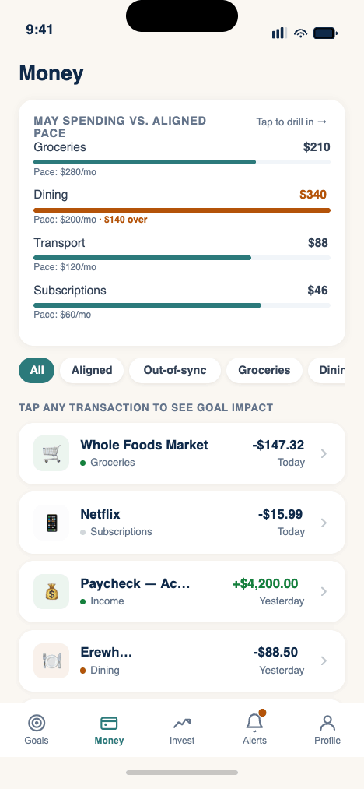
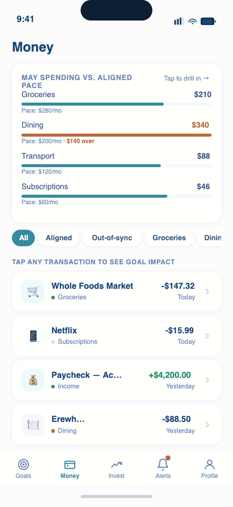

FROM ACCOUNT-FIRST TO life-first finance
Most adults have capable financial tools, yet financial anxiety is at record highs. The root cause is a structural mismatch: finance is presented as accounts and balances, but people think in goals, the people they love, and the milestones they fear missing. Translating a $145 grocery bill into a position on a 30-year retirement trajectory is exhausting work the user is left to do alone.
I used this concept to explore a different spine: what if every screen, transaction, and nudge was rendered through the lens of the life someone said they wanted? I led it end-to-end, synthesizing research into a comprehensive PRD, defining the IA and visual system, then building a working, navigable iOS prototype with an AI-assisted toolchain.
UNDERSTANDING THE money–life gap
Before a single screen, I mapped why a decade of personal-finance tools left the same need unmet. Five gaps surfaced repeatedly, and each became a design constraint rather than a feature request.
"Translating a $145 grocery bill into a position on a 30-year retirement trajectory is work most people can't do, and the few who can find it exhausting. The product's whole job is to do that translation, in public, every day."
Each strength exists in some competitor, but none integrates all of them. The white space is the intersection: unified aggregation, explainable AI, and goal-mapped investing in one compassionate product.
| Product | Unified view | Goal-anchored | Explainable AI | Spend ↔ Invest | Compassion | Free tier |
|---|---|---|---|---|---|---|
| Monarch | ✓ | ◐ sidebar | ✗ | ◐ tracking | ◐ | ✗ |
| YNAB | ◐ | ◐ envelopes | ✗ | ✗ | ✗ rigid | ✗ |
| Empower | ✓ | ◐ abstract | ✗ | ◐ invest-led | ◐ | ◐ advisor upsell |
| Copilot | ✓ | ◐ narrow | ◐ ML categorize | ✗ | ✓ | ✗ iOS only |
| Rocket Money | ✓ | ✗ "cancel" | ◐ | ✗ | ◐ | ◐ |
| This conceptGOALS-DRIVEN | ✓ | ✓ the spine | ✓ every nudge | ✓ continuous | ✓ by design | ✓ |
Disciplined and organized, but anxious about whether her plan is "enough."
A budget that tells her she can't have lattes.
Two kids; comfortable but feels his money "leaks." Wants to spend with intention.
Lectures, or a tool that frames everything as a problem.
$850K invested across many accounts. Successful but cognitively overloaded.
Another dashboard that adds work instead of removing it.
A CALM SYSTEM FOR A tense subject
Money is emotional. The system is deliberately quiet: a warm, paper-like canvas for everyday surfaces, deep navy reserved for moments that carry weight, and a single trustworthy teal for action. Type is humanist and legible; numbers are tabular so they never jitter as they update.
A warm sand canvas carries daily, low-stakes browsing, goals, transactions, progress. Deep navy is rationed for emphasis: the "Next Best Action," net-worth reveals, and projections. The colour itself signals "this matters" before a word is read.
Semantic colour is strict: green means aligned, amber means drifting, never decorative. Alignment shows as a coloured dot readable in peripheral vision, no label required.
Five persistent tabs, ordered by life logic: Goals first (your life), Money second (flows), Invest third (the future), then Alerts and Profile. The system itself comes last.


ONE NUMBER FOR "am I on track?"
The dashboard's headline isn't a balance, it's the Goal Alignment Score, a single interpretable read on whether today's behaviour serves tomorrow's goals. It's a composite, and tapping it reveals exactly how it's built. Below it, goals are cards; beneath them, one contextual next action.
The score is never a black box. Every component is visible, weighted, and explained, turning an abstract "wellbeing" feeling into something a user can actually act on.
Each goal shows progress, target date, and a plain-language status pill, On Track, Ahead, Slightly Behind, instead of raw percentages alone.
One recommended move, "save $200 more to reach your home goal 8 months sooner", paired with a "Why?" that shows the arithmetic.
A goal opens to contribution history, conservative/expected/optimistic projections, and inline editing of target, date, and linked accounts.

EVERY TRANSACTION, rendered through your goals
This is the heart of the bet: spending and investing as one continuous narrative. Tap any transaction and it doesn't just show a category, it shows the trade-off. An $88 dinner becomes "42 days later on your home goal," with the math one tap away and a path to recover it.


Each transaction carries a quiet alignment dot, aligned, neutral, out-of-sync. No red overspend banners; the user defines what "aligned" means.
Category bars compare spend to a goal-aligned pace, not a hard cap, "Dining is 24% above pace, shifting your timeline ~6 weeks."
Drift always comes with a concrete, low-effort path to recover the time, closing the loop the moment anxiety would otherwise start.
GUIDANCE YOU CAN interrogate
AI is the category claim, and the biggest risk. The rule I designed against: every nudge surfaces its reasoning. The conversational assistant is grounded in the user's own data, opens with the questions people actually have, and is bounded by a strict information-not-advice line.

Information, not advice. The assistant explains, projects, and educates, it never issues personalized buy/sell recommendations. The line is a trust moat, not a limitation.
EARNING TRUST IN eight screens
Onboarding does double duty: it teaches the product's worldview and earns permission to connect a person's financial life. It opens with values, show the math, no shame, before ever asking to link an account, and ends with a first dashboard that already reflects the user.


The first three screens sell the philosophy, connection, transparency, compassion, so linking an account feels earned, not extracted.
The linking screen states it plainly: 256-bit encryption, read-only access, CFPB §1033 compliant, surfaced exactly when hesitation peaks.
It closes on a populated dashboard with an animated net-worth reveal, the value is felt before the work of daily use begins.
THE "Why?" PATTERN
A repeating component anchors the whole product: anywhere a number, projection, or nudge appears, a "Why?" reveals the plain-language arithmetic behind it. Trust isn't a marketing claim here, it's a UI pattern, applied consistently, and backed by a set of principles that break ties when decisions conflict.
"You overspent by $140 this month."
"Dining is trending high. At this pace your home goal shifts ~6 weeks. Here's the math, and an easy way to recover it."
TRY THE working build
A fully interactive prototype of the app, tap through goals, spending intelligence, the AI assistant, and onboarding. It runs live, right here.